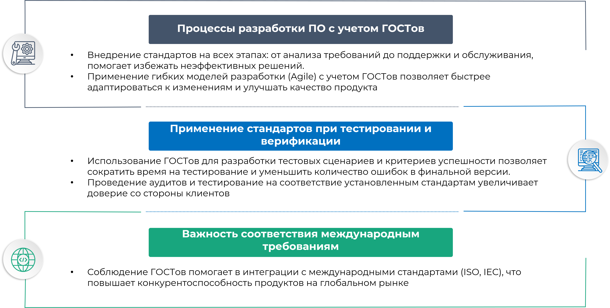

ГОСТы и технические регламенты, применяемые в сфере IT
- Стандарты обеспечивают единообразие в разработке, тестировании и внедрении программного обеспечения (ПО), что позволяет повысить эффективность работы команд.
- Технические регламенты устанавливают обязательные требования, что способствует защите пользователей и их данных, снижая риски юридических и финансовых последствий.
Цели
продукции
Основные ГОСТы в сфере ИТ
ГОСТ Р 51275-99: Стандарты программного обеспечения
- Определяет требования к процессу разработки, включая проектирование, кодирование и внедрение ПО.
- Рекомендации по документированию, управлению изменениями и обеспечению качества на всех этапах разработки, что снижает время на тестирование и исправление ошибок.
ГОСТ Р ИСО/МЭК 25010-2012: Функциональные характеристики программных систем
- Устанавливает критерии качества для оценки программных продуктов, включая функциональность и производительность.
- Применяется при сравнении различных решений и выборе наиболее подходящего ПО для задач, что помогает избежать неэффективных вложений.
ГОСТ Р 52424-2005: Стандарты безопасности информации
- Устанавливает требования к защите информации в ИТ-системах, включая методы криптографической защиты и управление доступом.
- Реализация этих стандартов позволяет значительно снизить риски утечек информации и финансовые потери.
ГОСТ Р 53108-2008: Стандарты по защите персональных данных
- Устанавливает требования к обработке и хранению цифровых данных.
- Согласование субъектов данных и меры по защите информации способствуют повышению доверия пользователей и уменьшению рисков штрафов за нарушение законодательства.
Технические регламенты
Технический регламент о средствах безопасности связи:
Устанавливает требования к оборудованию и ПО в области связи, обеспечивая защиту от угроз, связанных с использованием телекоммуникационных технологий.
Соответствие этим требованиям может увеличить стабильность и безопасность связи, что важно для бизнес-процессов.
Технический регламент о средствах безопасности связи:
Устанавливает требования к оборудованию и ПО в области связи, обеспечивая защиту от угроз, связанных с использованием телекоммуникационных технологий.
Соответствие этим требованиям может увеличить стабильность и безопасность связи, что важно для бизнес-процессов.
Применение стандартов

Роль ГОСТов и технических регламентов
- Стандарты способствуют повышению качества IT-продуктов, снижению рисков и улучшению взаимодействия между различными системами.
- Обеспечивают защиту пользователей и их данных, что в свою очередь улучшает репутацию компании.
- Быстрые изменения в технологиях требуют регулярного обновления стандартов для соответствия новым вызовам и угрозам.
Рекомендации
- Регулярно проверять изменения и новые редакции стандартов, чтобы оставаться в курсе последних требований и обеспечивать соответствие.
- Создание культуры соблюдения стандартов в команде, обучение сотрудников основам стандартов и интеграция их в бизнес-процессы.
Прибыль от применения ГОСТов в проектах
- Применение стандартов позволяет заранее выявлять и устранять проблемы, что значительно снижает затраты на исправление ошибок в будущем.
- Соответствие стандартам повышает доверие клиентов, что ведет к увеличению числа продаж и повторных заказов.
- Стандарты оптимизируют процессы разработки и тестирования, что увеличивает производительность команды и сокращает время выхода продукта на рынок.